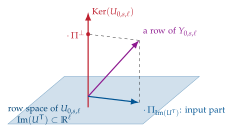
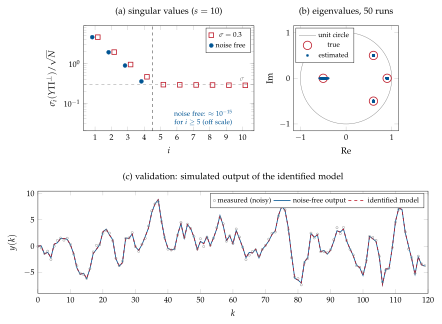

Chapter 8Subspace identification: the MOESP method
8.1 Motivation
Prediction-error methods (Chapter 6) are statistically optimal, but for all model structures except ARX they require nonlinear, possibly multimodal, optimization; they need the choice of several orders and delays; MIMO polynomial models are hard to parametrize; and they are not built to estimate state-space models directly. The Ho–Kalman method (Chapter 7) estimates state-space models with SVDs only, but it needs the impulse response (or an estimate of it) and does not account for noise. Subspace identification methods combine the best of both worlds: they work with general inputs, estimate MIMO state-space models directly, the order is chosen by inspecting singular values, and only numerically robust tools are used (QR/LQ, SVD, linear least squares).
We study the MOESP family (Multivariable Output-Error State sPace, Verhaegen and Dewilde, 1992 [11]), following Chapter 9 of Verhaegen and Verdult [1]. As for Ho–Kalman, the derivation is presented step by step: first two special cases (input-free system and impulse response) that show the key idea, then the general deterministic case, and finally the case of white output noise.
8.2 Problem setting and the data equation
Consider the LTI system with output measurement noise
where \(v(k)\) is a zero-mean white noise, \(\E\bigl(v(k)v\T(j)\bigr)=\sigma^2I_q\,\delta_{kj}\), independent of \(u\); \((A,C)\) observable and \((A,B)\) reachable (Appendix A). The problem is:
Until Section 8.8 we assume \(v\equiv0\) (deterministic case).
Stacking the equations. From (5.3), with \(v\equiv0\),
that is, in compact form,
where \(\Obs_s\) is the extended observability matrix and \(\Toe_s\) is a lower-triangular block Toeplitz matrix containing the Markov parameters \(D,CB,CAB,\dots\). Writing (8.2) for \(k=0,1,\dots,\ell-1\) and placing the results side by side we obtain the data equation
with the block Hankel matrices of Definition 5.1 and the state sequence
and \(U_{0,s,\ell}\in\R^{sp\times\ell}\) defined analogously. The user-defined parameters are chosen so that
(all the samples used exist; usually \(\ell=N-s+1\)). Each column of the data equation is a window of \(s\) consecutive samples; \(\ell\) windows, shifted by one sample, are collected. In the data equation, \(Y\) and \(U\) are known, while \(\Obs_s\), \(X_{0,\ell}\) and \(\Toe_s\) are unknown. The idea of subspace methods is to recover the column space of \(\Obs_s\), from which \(A\) and \(C\) follow exactly as in Ho–Kalman.
8.3 Special case 1: the autonomous system
Let \(u(k)\equiv0\), so that the system is \(x(k+1)=Ax(k)\), \(y(k)=Cx(k)\), with \(x(k)=A^kx(0)\). The data equation becomes
\(X_{0,\ell}\) is the extended reachability matrix of the pair \((A,x(0))\), i.e. of a system whose “input matrix” is \(x(0)\): \(\rank(X_{0,\ell})=n\) if and only if the pair \((A,x(0))\) is reachable (\(\ell\ge n\)), which means that the initial state excites all the natural modes of the system. Under this assumption, and with \((A,C)\) observable and \(s\ge n\), Corollary 2.13 gives
Hence, computing the SVD \(Y_{0,s,\ell}=U_n\Sigma_nV_n\T\), the factors \(L=U_n\Sigma_n^{1/2}\) and \(P=\Sigma_n^{1/2}V_n\T\) play the role of \(\Obs_s\) and \(X_{0,\ell}\) in some state basis, and
8.4 Special case 2: the impulse response
Consider now the SISO case with \(x(0)=0\) and \(u(k)=\delta(k)\). Then \(U_{0,s,\ell}\) has a single non-zero entry, \(u(0)=1\) in its top-left corner. Dropping the first column, i.e. starting the windows at \(k=1\), we get \(U_{1,s,\ell-1}=0\) and
because \(x(1)=B\) and \(x(k)=A^{k-1}B\) afterwards. Thus
the Hankel matrix of the Markov parameters: we have recovered exactly the Ho–Kalman setting of Section 7.1. (In the MIMO case the same happens with \(p\) separate impulse experiments, one per input channel, whose output matrices are placed side by side.)
8.5 The general deterministic case
For a general input the term \(\Toe_sU_{0,s,\ell}\) in (8.3) “pollutes” the column space of \(Y_{0,s,\ell}\). Since \(\Toe_s\) is unknown, we remove it by multiplying the data equation on the right by a matrix that annihilates \(U_{0,s,\ell}\): the orthogonal projector onto the kernel of \(U_{0,s,\ell}\),
which exists if \(U_{0,s,\ell}\) has full row rank \(sp\) (Section 4.8). \(\Pip\) projects onto \(\Ker(U_{0,s,\ell})\), the orthogonal complement of the row space \(\Im(U_{0,s,\ell}\T)\). Since \(U_{0,s,\ell}\Pip=U-UU\T(UU\T)^{-1}U=0\),
The input has disappeared, and \(Y_{0,s,\ell}\Pip\) has the same structure as the autonomous case: \(\Obs_s\) times something. We only have to check that the “something” \(X_{0,\ell}\Pip\) still has full row rank \(n\), i.e. that the projection did not destroy information about the state (Figure 8.1).

Lemma 8.1 (Rank condition, Verhaegen and Verdult, Lemma 9.2). Let \((A,C)\) be observable, \(s\ge n\), and
Then
Proof.
Condition (8.6) implies that \(U_{0,s,\ell}\) has full row rank, so \(\Pip\) is well defined. Suppose that \(X_{0,\ell}\Pip\) had rank smaller than \(n\): then there would exist \(z\neq0\) with \(z\T X_{0,\ell}\Pip=0\), i.e. the row vector \(z\T X_{0,\ell}\) would have no component in \(\Ker(U_{0,s,\ell})\) and would therefore belong to the row space of \(U_{0,s,\ell}\): \(z\T X_{0,\ell}=w\T U_{0,s,\ell}\) for some \(w\). But then \(\bmat{z\T&-w\T}\bmat{X_{0,\ell}\\ U_{0,s,\ell}}=0\) with \((z,-w)\neq0\), which contradicts (8.6). Hence \(X_{0,\ell}\Pip\in\R^{n\times\ell}\) has full row rank \(n\), \(\Obs_s\) has full column rank \(n\) (observability and \(s\ge n\)), and Corollary 2.13 applied to (8.5) gives the claim.
∎Remark 8.2 (When does the rank condition hold?). (8.6) requires that the state sequence and the inputs be “independent enough”. By Willems’ lemma (Theorem 5.2) it holds when \((A,B)\) is reachable and the input is persistently exciting of order \(s+n\) (Verhaegen and Verdult, Lemma 9.3, under suitable conditions); in practice white-noise or PRBS inputs of sufficient length satisfy it. It fails, e.g., for \(u\equiv0\) (then \(U\) has no rows of full rank; this is the autonomous case, handled directly in Section 8.3) or for inputs that are too “poor”, such as a single sinusoid with \(s>1\).
Estimating \(A\) and \(C\). Compute the SVD of the projected output,
By Lemma 8.1, \(\Im(U_n)=\Im(\Obs_s)\), so there is a nonsingular \(T\) such that
i.e. \(L\) is the extended observability matrix of the equivalent system with \(\hat A=T^{-1}AT\), \(\hat C=CT\). (Unlike Ho–Kalman, the factor \(\Sigma_n^{1/2}\) is not needed: only the column space of \(\Obs_s\) is used, and any basis of it defines a valid state basis.) We now proceed as in Chapter 7, first in the SISO case and then in the MIMO case.
SISO case (\(p=q=1\), \(L\in\R^{s\times n}\)): each block row of \(\Obs_s\) is a single row, so
MIMO case (\(L\in\R^{sq\times n}\)): each block row of \(\Obs_s\) has \(q\) rows, so
\(L^{\up}\) (\(L\) without its last block row) has full column rank because \(s-1\ge n\). The SISO formulas are the case \(q=1\) of the MIMO ones.
8.6 Estimating \(B\), \(D\) and \(x(0)\) by least squares
Once \(\hat A\) and \(\hat C\) are available (in the basis defined by \(T\), which we drop from the notation), the output (5.3)
is linear in the remaining unknowns \(x(0)\), \(B\) and \(D\). We only have to rewrite it in the regression form \(y(k)=\varphi\T(k)\theta\) of Chapter 4.
SISO case. With \(p=q=1\), \(u(\tau)\) is a scalar, so it can be moved to the left of the row vector \(CA^{k-\tau-1}\): \(CA^{k-\tau-1}Bu(\tau)=u(\tau)\,CA^{k-\tau-1}B\). Hence
(the sum is empty, i.e. zero, for \(k=0\)). Stacking the equations for \(k=0,\dots,N-1\),
MIMO case. Now \(u(\tau)\in\R^p\) is a vector and \(B\in\R^{n\times p}\), \(D\in\R^{q\times p}\) are matrices: the unknown \(B\) is “sandwiched” between \(CA^{k-\tau-1}\) and \(u(\tau)\), and cannot simply be collected on the right. The tool to do it is the Kronecker product.
Definition 8.3 (Kronecker product and vectorization). For \(M\in\R^{a\times b}\) and \(N\in\R^{c\times d}\), the Kronecker product is the \(ac\times bd\) matrix
For \(P\in\R^{b\times c}\), \(\vect(P)\in\R^{bc}\) stacks the columns of \(P\) one below the other.
The two properties we need are
(for conformable dimensions). For example, with \(P=\bmat{p_1&p_2}\) and \(M=\bmat{m_1\\ m_2}\), \(NPM=m_1Np_1+m_2Np_2=\bmat{m_1N&m_2N}\bmat{p_1\\ p_2}=(M\T\otimes N)\vect(P)\).
Apply the first property to each term of the output, noting that a vector is equal to its own vectorization:
Therefore
where now \(\varphi\T(k)\in\R^{q\times(n+np+pq)}\) is a block row. Stacking for \(k=0,\dots,N-1\)
gives \(Y=\Phi\theta\) with \(Y=[y\T(0)\;\cdots\;y\T(N-1)]\T\in\R^{Nq}\) and \(\Phi\in\R^{Nq\times(n+np+pq)}\),
so that \(\hat\theta=\Phi\pinvsym Y\); \(\hat B\) and \(\hat D\) are obtained by inverting the
vectorization (MATLAB: reshape). For \(p=q=1\), \(u\T(\tau)\otimes CA^{k-\tau-1}=u(\tau)CA^{k-\tau-1}\)
and \(u\T(k)\otimes I_1=u(k)\): (8.9) reduces to (8.7).
Efficient computation of the regressor. Define \(G(k)=\sum_{\tau=0}^{k-1}u\T(\tau)\otimes A^{k-\tau-1}\in\R^{n\times np}\). By the second property in (8.8), \(C\,(u\T\otimes A^j)=(1\cdot u\T)\otimes(CA^j)\) and \(A\,(u\T\otimes A^j)=u\T\otimes A^{j+1}\), so the middle block of \(\varphi\T(k)\) is \(C\,G(k)\) and
a recursion that costs \(O(n^2p)\) operations per sample.
Remark 8.4. (i) \(\Phi\) has full column rank when \((A,C)\) is observable and the input is sufficiently exciting. (ii) If \(A\) is asymptotically stable, \(CA^kx(0)\to0\) and the initial state only affects the first samples: for long records \(x(0)\) can be set to zero and the first block column of \(\Phi\) dropped. (iii) The model obtained is in the (arbitrary) state basis defined by \(L\); \(\hat B,\hat D\) are consistent with it because they are estimated after \(\hat A,\hat C\).
Input: \(\{u(k),y(k)\}_{k=0}^{N-1}\), \(u(k)\in\R^p\), \(y(k)\in\R^q\); \(s>n\) (an upper bound on the order), \(\ell=N-s+1\).
Build \(U_{0,s,\ell}\in\R^{sp\times\ell}\) and \(Y_{0,s,\ell}\in\R^{sq\times\ell}\).
Compute \(Y_{0,s,\ell}\Pip=Y-YU\T(UU\T)^{-1}U\) (or, better, the LQ factor \(L_{22}\) of Section 8.7).
SVD: \(Y_{0,s,\ell}\Pip=U\Sigma V\T\); choose \(n\) from the singular values; \(L=U(:,1\!:\!n)\).
\(\hat C=L(1\!:\!q,:)\), \(\;\hat A=L(1\!:\!(s-1)q,:)\pinvsym\,L(q+1\!:\!sq,:)\) (SISO: \(\hat C=L(1,:)\), \(\hat A=L(1\!:\!s-1,:)\pinvsym L(2\!:\!s,:)\)).
Build \(\Phi\) from (8.9) (SISO: (8.7)) with \(\hat A,\hat C\), solve \(\hat\theta=\Phi\pinvsym Y\), and unpack \(\hat x(0)\), \(\hat B=\vect^{-1}(\cdot)\), \(\hat D=\vect^{-1}(\cdot)\).
For the fourth-order SISO system of Example 7.2, excited by \(N=1000\) samples of white
noise (\(x(0)=0\), no noise, \(s=10\)), the singular values of \(Y\Pip/\sqrt N\) are
\(4.636,\ 1.929,\ 0.891,\ 0.355\) followed by values of the order of \(10^{-15}\): the order is
exactly revealed and the identified eigenvalues coincide with the true ones to machine
precision. For the \(2\times2\) MIMO system of Chapter 7 (fourth exercise, \(n=3\),
\(D\neq0\)), excited by \(N=400\) samples of white noise from \(x(0)=(1,-1,0.5)\T\) and with \(s=8\),
the singular values of \(Y\Pip\) are \(102.2,\ 60.3,\ 13.7\) followed by values below \(10^{-13}\);
the estimated eigenvalues are exactly \(0.8\pm0.2j\), \(0.5\), the estimate of \(D\) (which is
invariant) is \(\bmat{0&0.5\\0&0}\) up to \(10^{-14}\), and the output simulated with the estimated
\(\hat x(0)\) matches the data with a relative error of \(4\cdot10^{-15}\) (script
test_hk_moesp.m).
8.7 An efficient implementation: the LQ factorization
The projector \(\Pip\) is an \(\ell\times\ell\) matrix, and \(\ell\approx N\) can be large: it should never be formed explicitly. An elegant and numerically robust alternative is the LQ factorization (the transpose of a QR factorization, Section 2.6) of the stacked data matrix:
where the \(L_{ij}\) are lower triangular (block) factors and \(\bmat{Q_1\\ Q_2}\) has orthonormal rows. Then \(U=L_{11}Q_1\) with \(L_{11}\) nonsingular (full row rank of \(U\)), so the rows of \(Q_1\) span the row space of \(U\) and \(\Pip=I-Q_1\T Q_1\). Since \(Q_2Q_1\T=0\) and \(Q_1Q_1\T=I\),
Because \(Q_2\) has orthonormal rows, if \(L_{22}=U\Sigma V_L\T\) then \(Y\Pip=U\Sigma(Q_2\T V_L)\T\) is an SVD of \(Y\Pip\): the left singular vectors and the singular values of \(Y\Pip\) are those of the small \(sq\times sq\) matrix \(L_{22}\), and \(Q\) never needs to be stored. In MATLAB:
Lf = triu(qr([U; Y]', 0))'; % lower-triangular factor of [U; Y] = Lf*Q
L22 = Lf(s*p+1:end, s*p+1:end); % Y*Pi_Ker(U) = L22*Q2
[Uy, Sy] = svd(L22); % Im(Uy(:,1:n)) = Im(O_s)
(qr(M,0) returns the economy-size factorization; triu extracts the \(R\)
factor also in GNU Octave, where the one-output call returns a matrix containing
Householder vectors below the diagonal.) The same LQ factorization is the computational
core of all subspace methods (PI/PO-MOESP, N4SID), where more block rows (past inputs and
outputs used as instrumental variables) are stacked in (8.10).
8.8 The case of white output noise
Consider now (8.1) with \(v\neq0\). The data equation becomes
with \(V_{0,s,\ell}\) the block Hankel matrix of the noise, and after the projection
Now \(\rank(Y\Pip)=\min(sq,\ell)\) in general: the column space of \(\Obs_s\) is no longer exactly revealed. However, it is revealed asymptotically, for \(\ell\to\infty\) (i.e. \(N\to\infty\)), under the following assumptions:
\(v(k)\) is zero-mean white noise with \(\E\bigl(v(k)v\T(k)\bigr)=\sigma^2I_q\);
\(v\) is uncorrelated with the input \(u\) (open-loop experiment) and hence with the state sequence (the noise does not enter the state equation);
the signals are ergodic, so that sample averages converge to expectations: \(\frac1\ell V_{0,s,\ell}V_{0,s,\ell}\T\to\sigma^2I_{sq}\), \(\frac1\ell V_{0,s,\ell}U_{0,s,\ell}\T\to0\), \(\frac1\ell V_{0,s,\ell}X_{0,\ell}\T\to0\);
the rank condition (8.6) holds, uniformly: \(\lim\frac1\ell X\Pip X\T\succ0\).
Theorem 8.5 (Verhaegen and Verdult, Theorem 9.2). Under the above assumptions,
where \(\Obs_s\bigl(\lim\frac1\ell X\Pip X\T\bigr)\Obs_s\T=U_n\Sigma_n^2U_n\T\) is the (rank \(n\)) noise-free part. Consequently \(\Im(U_n)=\Im(\Obs_s)\): the \(n\) dominant left singular vectors of \(Y\Pip\) still span the column space of the extended observability matrix.
Sketch.
Since \(\Pip\) is symmetric and idempotent, \(Y\Pip Y\T=(Y\Pip)(Y\Pip)\T\). Expanding,
With \(\Pip=I-U\T(UU\T)^{-1}U\) and the ergodicity assumptions,
so the cross terms vanish, while
Writing the noise-free part as \(U_n\Sigma_n^2U_n\T\) and \(\sigma^2I=\sigma^2(U_nU_n\T+\bar U_n\bar U_n\T)\) gives the result.
∎Consequences.
The same algorithm as in the deterministic case (Algorithm 8.1) can be used: the estimates of \(A\) and \(C\) are (asymptotically) unbiased and consistent, up to a change of coordinates, and so are the least-squares estimates of \(B\), \(D\) (the regressor in (8.9) only contains inputs, which are uncorrelated with \(v\)).
Order selection: the singular values of \(Y\Pip/\sqrt\ell\) tend to \(\sqrt{\sigma_i^2+\sigma^2}\) for \(i\le n\) and to \(\sigma\) for \(i>n\). The order is detectable as the number of singular values above the noise floor \(\sigma\); this is easy when the smallest “signal” singular value \(\sigma_n\) is large compared with \(\sigma\) (good signal-to-noise ratio).
The LQ implementation of Section 8.7 applies unchanged.
The system of Example 7.2 is excited by white Gaussian noise of unit variance, \(N=1000\), and the output is corrupted by white noise with \(\sigma=0.3\) (the noise-free output has standard deviation \(3.3\), a signal-to-noise ratio of about \(21\) dB); \(s=10\). Figure 8.2a shows the singular values of \(Y\Pip/\sqrt N\): the four dominant ones (\(4.63,1.95,0.94,0.46\)) are slightly increased with respect to the noise-free case, as predicted by Theorem 8.5 (e.g. \(\sqrt{0.355^2+0.3^2}=0.46\)), and the others form a floor at \(0.28\)–\(0.29\approx\sigma\). Choosing \(n=4\), in 50 Monte Carlo runs the estimated eigenvalues cluster around the true ones (Figure 8.2b); the pole in \(-0.5\), which contributes least to the output, has the largest spread. On a fresh validation experiment the simulated output of the identified model has a fit of \(99.1\pm0.2\%\) with respect to the noise-free output, and of \(91.6\%\) (single run) with respect to the noisy measurements, whose noise obviously cannot be predicted (Figure 8.2c).

8.9 Summary and limitations
| Ho–Kalman / Kung | MOESP (ordinary) | |
|---|---|---|
| data | impulse response (Markov parameters) | general PE input and output |
| key matrix | \(H_{s,\ell}=\Obs_s\Rch_\ell\) | \(Y\Pip=\Obs_sX\Pip\) (via LQ) |
| \(A\), \(C\) | shift invariance of \(L=U_n\Sigma_n^{1/2}\) | shift invariance of \(L=U_n\) |
| \(B\), \(D\) | first block column of \(P\), \(W(0)\) | linear LS (Kronecker/vec) |
| noise | SVD truncation (heuristic) | white output noise: consistent |
| MIMO | yes | yes |
What we have not seen: if the output noise is colored, or if there is process noise (\(x(k+1)=Ax+Bu+w\)), then \(\frac1\ell V\Pip V\T\) does not converge to a multiple of the identity and ordinary MOESP gives biased estimates of \(\Im(\Obs_s)\). The remedy is to use instrumental variables built from past inputs (PI-MOESP) or past inputs and outputs (PO-MOESP), which are uncorrelated with the future noise; see Chapter 9 of Verhaegen and Verdult [1] and the book by Katayama [12].
8.10 Exercises
Exercise 8.1. Write the data equation (8.3) explicitly for \(s=3\) and a SISO system, and verify by direct computation that \(\Toe_3U_{0,3,\ell}\) has the claimed structure.
Exercise 8.2. Show that \(\Pip\) in (8.4) is symmetric, idempotent and satisfies \(\Im(\Pip)=\Ker(U_{0,s,\ell})\). What is its rank?
Exercise 8.3. Prove the vectorization identity \(\vect(NPM)=(M\T\otimes N)\vect(P)\) by comparing the \(j\)-th column of both sides. Then verify numerically (8.9) for a random system with \(p=2\), \(q=3\).
Exercise 8.4. In the autonomous case, show that if \(x(0)\) is an eigenvector of \(A\) then \(\rank(Y_{0,s,\ell})=1\) whatever \(n\) is. Interpret the result in terms of excitation of the natural modes (Appendix A).
Exercise 8.5. Repeat Example 8.2 for \(\sigma\in\{0.1,0.3,1\}\) and \(N\in\{200,1000,5000\}\). Plot the singular values and the spread of the eigenvalue estimates. For which combinations is the order still detectable?
Exercise 8.6. Replace the white output noise with colored noise \(v(k)=\frac{1}{1-0.9q^{-1}}e(k)\) and check
empirically that the estimated eigenvalues are biased. Compare with the MATLAB function
n4sid.
8.11 Implementation in MATLAB and Python
The function moesp implements Algorithm 8.1 with both the explicit projection
('proj', as in the notes) and the LQ implementation ('lq', default); the
regressor for \(B\), \(D\), \(x(0)\) is built with the recursion for \(G(k)\).
function [A, B, C, D, x0, sv] = moesp(u, y, s, n, method)
%MOESP Basic (ordinary) MOESP subspace identification for the deterministic
% and the white-output-noise case.
% [A,B,C,D,x0,sv] = moesp(u, y, s, n, method)
% u : N-by-p input samples (row k+1 = u(k)^T, k = 0..N-1)
% y : N-by-q output samples
% s : number of block rows of the Hankel matrices (s > n)
% n : model order (inspect sv to choose it; pass n = [] to get only sv)
% method : 'proj' (explicit projection, as in the lecture notes) or
% 'lq' (numerically efficient LQ implementation, default)
if nargin < 5, method = 'lq'; end
[N, p] = size(u); q = size(y, 2);
l = N - s + 1; % number of columns of the Hankel matrices
U = blockhankel(u, s, l); % U_{0,s,l} (s*p x l)
Y = blockhankel(y, s, l); % Y_{0,s,l} (s*q x l)
switch method
case 'proj'
% Y*Pi_{Ker(U)} = Y - Y U^T (U U^T)^{-1} U (the l x l projector is never formed)
YP = Y - ((Y * U') / (U * U')) * U;
[Uy, Sy] = svd(YP, 'econ');
case 'lq'
% [U; Y] = [L11 0; L21 L22] [Q1; Q2] => Y*Pi_{Ker(U)} = L22*Q2
Lf = triu(qr([U; Y]', 0))'; % lower-triangular LQ factor
L22 = Lf(s*p+1:end, s*p+1:end);
[Uy, Sy] = svd(L22);
otherwise
error('moesp: unknown method');
end
sv = diag(Sy);
if isempty(n), A = []; B = []; C = []; D = []; x0 = []; return; end
Lm = Uy(:, 1:n); % basis of Im(O_s) (up to a change of basis)
C = Lm(1:q, :);
A = pinv(Lm(1:(s-1)*q, :)) * Lm(q+1:s*q, :);
% ---- B, D, x0 by linear least squares (Kronecker product / vec trick) ----
% y(k) = C A^k x0 + sum_{tau<k} (u(tau)^T kron C A^(k-tau-1)) vec(B) + (u(k)^T kron I_q) vec(D)
Phi = zeros(N*q, n + n*p + p*q);
G = zeros(n, n*p); % G_k = sum_{tau<k} u(tau)^T kron A^(k-tau-1)
Ak = eye(n); % A^k
for k = 0:N-1
rows = k*q+1:(k+1)*q;
uk = u(k+1, :);
Phi(rows, :) = [C*Ak, C*G, kron(uk, eye(q))];
G = A*G + kron(uk, eye(n)); % G_{k+1} = A G_k + u(k)^T kron I_n
Ak = A*Ak;
end
theta = Phi \ reshape(y', [], 1); % stacked outputs [y(0); y(1); ...; y(N-1)]
x0 = theta(1:n);
B = reshape(theta(n+1:n+n*p), n, p); % inverse of vec(.)
D = reshape(theta(n+n*p+1:end), q, p);
end
function H = blockhankel(x, s, l)
%BLOCKHANKEL s block rows, l columns; column j = [x(j-1); x(j); ...; x(j+s-2)]
m = size(x, 2);
H = zeros(s*m, l);
for i = 1:s
H((i-1)*m+1:i*m, :) = x(i:i+l-1, :)';
end
end
simss simulates a discrete-time state-space model (core MATLAB, no toolbox):
function y = simss(A, B, C, D, u, x)
%SIMSS Simulate x(k+1) = A x(k) + B u(k), y(k) = C x(k) + D u(k).
% u : N-by-p inputs, x : initial state; y : N-by-q outputs
if nargin < 6, x = zeros(size(A, 1), 1); end
N = size(u, 1); y = zeros(N, size(C, 1));
for k = 1:N
y(k, :) = (C*x + D*u(k, :)')';
x = A*x + B*u(k, :)';
end
end
The demo reproduces Example 8.2 (in GNU Octave 8.4 it prints the eigenvalues \(-0.4977\), \(0.5951\pm0.4989j\), \(0.9003\) and a validation fit of \(99.1\%\) against the noise-free output):
%% Chapter 8 - MOESP on a 4th-order SISO system with white output noise
A0 = [1.2 -0.61 0 0; 1 0 0 0; 0 0 0.9 0; 0 0 0 -0.5];
B0 = [1; 0; 1; 0.4]; C0 = [1 0.5 0.3 1]; D0 = 0;
randn('seed', 4);
N = 1000; s = 10; sigma = 0.3;
u = randn(N, 1);
y0 = simss(A0, B0, C0, D0, u, zeros(4, 1));
y = y0 + sigma*randn(N, 1);
[~, ~, ~, ~, ~, sv0] = moesp(u, y0, s, []); % noise-free data
[~, ~, ~, ~, ~, sv1] = moesp(u, y, s, []); % noisy data
disp([sv0 sv1]/sqrt(N)) % noise floor ~ sigma for i > n
[A, B, C, D, x0] = moesp(u, y, s, 4);
disp([sort(eig(A0)) sort(eig(A))])
% validation on fresh data
uv = randn(300, 1);
yv = simss(A0, B0, C0, D0, uv, zeros(4, 1));
yh = simss(A, B, C, D, uv, zeros(4, 1));
fprintf('fit = %.1f %%\n', 100*(1 - norm(yv - yh)/norm(yv - mean(yv))));
With the System Identification Toolbox, subspace identification is available through
n4sid (which implements MOESP, N4SID and CVA weightings), and the result can be
refined by PEM with ssest:
data = iddata(y, u, 1);
opt = n4sidOptions('N4Weight', 'MOESP', 'N4Horizon', [10 10 10]);
m = n4sid(data, 1:10, opt); % plots the singular values to choose n
m4 = n4sid(data, 4, opt); % idss model: m4.A, m4.B, m4.C, m4.D
m4p = ssest(data, m4); % PEM refinement initialized with MOESP
compare(zv, m4, m4p);
The Python implementation in sysid.py mirrors the MATLAB one:
import numpy as np
from sysid import moesp, simulate_ss, fit_percent
A = np.array([[1.2, -0.61, 0, 0], [1, 0, 0, 0], [0, 0, 0.9, 0], [0, 0, 0, -0.5]])
B = np.array([[1.], [0], [1], [0.4]]); C = np.array([[1., 0.5, 0.3, 1]]); D = np.zeros((1, 1))
rng = np.random.default_rng(4); N, s = 1000, 10
u = rng.standard_normal((N, 1))
y = simulate_ss(A, B, C, D, u) + 0.3*rng.standard_normal((N, 1))
*_, sv = moesp(u, y, s) # inspect sv to choose n
Ah, Bh, Ch, Dh, x0h, sv = moesp(u, y, s, n=4) # method="lq" by default
print(np.sort_complex(np.linalg.eigvals(Ah)))
uv = rng.standard_normal((N, 1))
print(fit_percent(simulate_ss(A, B, C, D, uv), simulate_ss(Ah, Bh, Ch, Dh, uv)))
Further Study: PI/PO-MOESP, N4SID, CVA and the innovation form
Innovation form. With process and measurement noise, every stationary LTI system with rational spectrum admits the innovation (Kalman) form \(x(k+1)=Ax(k)+Bu(k)+Ke(k)\), \(y(k)=Cx(k)+Du(k)+e(k)\), where \(e\) is the (white) innovation and \(K\) the steady-state Kalman gain. The output-error assumption of this chapter corresponds to \(K=0\); ARX models correspond to a particular \(K\) (deadbeat observer, Appendix B).
Instrumental variables. Split the data into “past” and “future” Hankel matrices \(U_p,Y_p\) and \(U_f,Y_f\). In PO-MOESP the future data equation \(Y_f=\Obs_sX_f+\Toe_sU_f+\text{noise}\) is projected onto \(\Ker(U_f)\) and then multiplied by \(Z\T=[U_p\T\;Y_p\T]\): since the future noise is uncorrelated with past data, \(\lim\frac1\ell Y_f\Pip_{U_f}Z\T=\Obs_s\lim\frac1\ell X_f\Pip_{U_f}Z\T\) has rank \(n\) and column space \(\Im(\Obs_s)\) for colored noise and process noise alike. In practice this is implemented by an LQ factorization of \([U_f;Z;Y_f]\) [1, 12].
N4SID and CVA. Van Overschee and De Moor [8] showed that MOESP, N4SID and CVA (canonical variate analysis, Larimore) are special cases of a unified algorithm in which the SVD is applied to \(W_1\,\mathcal O\,W_2\), the oblique projection \(\mathcal O\) of \(Y_f\) along \(U_f\) onto the past data, weighted by different matrices \(W_1,W_2\). N4SID estimates a state sequence (the Kalman filter states) instead of \(\Im(\Obs_s)\), and then obtains \(A,B,C,D\) by least squares.
Closed loop. If \(u\) is generated by feedback, future inputs are correlated with past noise and all “open-loop” subspace methods are biased. Closed-loop variants (e.g. predictor-based subspace identification, PBSID) estimate the predictor form \(x(k+1)=(A-KC)x+(B-KD)u+Ky\) first.
Statistical properties. Subspace estimates are consistent under the stated assumptions but in general not efficient; they are the standard way to initialize prediction-error (maximum-likelihood) estimation of state-space models.